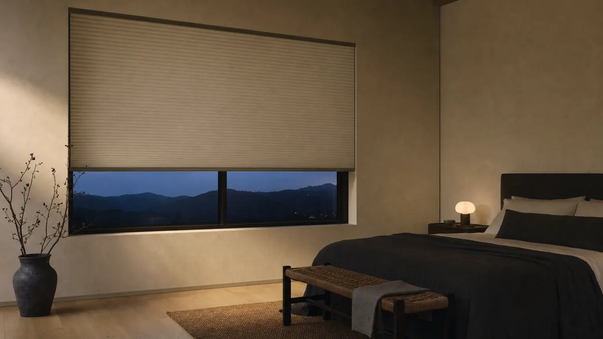

Home/Shop by need/Block the light
Need · Blackout
Make the room properly dark.
Blackout fabric is the easy part. What actually decides how dark the room gets is whether you close the four gaps around the fabric: the two sides, the top and the bottom.

How it works
The mechanism, before the products.
Fabric is one of five surfaces
A blackout fabric with a foil liner stops effectively all the light that hits it. The light you still see in a darkened bedroom is almost never coming through the fabric. It is coming around the edge, and the biggest of those edges is the two sides.
Close the sides first
On an inside mount, the shade has to be cut narrower than the opening so it can move, which leaves a slim gap down each side. SmartPrivacy® side channels cover that gap with a track the fabric runs inside. It is the single biggest improvement you can make.
Or go outside and go generous
If channels are not for you, mount outside the opening and overlap the trim by at least two inches on each side, plus the same above. An outside mount cannot seal the way a channel does, but overlap turns a bright line into a soft edge.
The bottom bar is the last inch
A fabric-wrapped SmartRail™ bottom bar sits flatter against the sill than an exposed aluminium bar, which matters on a windowsill that is not perfectly level.
Before you order
Order up to eight free swatches and tape them to the glass at the hour the problem actually happens. It is the only test that settles this.
Order free samplesWhat we would fit
Three that actually work.
Ranked, with the downside written next to each one.
Double cell blackout, in a side channel
A double cell honeycomb in blackout gives you the darkest face we make, and the cell structure also damps outside noise, which is usually the second complaint in a bedroom. Add SmartPrivacy® channels and the side gap is gone.
The tradeoff. The channels are a visible frame around the window and they need to be planned into the measurement, not added afterwards. On a shallow opening they push you to an outside mount.
Cellular ShadesBlackout roller in a cassette
The flattest, quietest-looking option: one unbroken panel of blackout fabric, with a cassette or fascia over the roll so light cannot escape above the tube. Widths run to 108".
The tradeoff. Without side channels, a roller leaks more at the edges than a channelled cellular shade, because the tube has to be shorter than the opening. Plan an outside mount if the room needs to be genuinely dark.
Roller & SolarBlackout lining behind a real fabric
For a bedroom that has to look like a bedroom rather than a hotel room. A blackout lining sits behind the face fabric, so you get the fold and the texture with the light stopped.
The tradeoff. The folds break the seal along the bottom and the stack sits proud of the glass, so a blackout roman is reliably dim rather than reliably dark. Not the pick for a shift worker.
Roman ShadesPublished ranges
The numbers, for the three lines above.
| Line | Width | Height | Opacity or material | Mount |
|---|---|---|---|---|
| Cellular Shades | 18" to 96" | 24" to 108" | Light filtering, room darkening, blackout | Inside or outside · 3/4" minimum depth |
| Roller & Solar | 20" to 108" | 24" to 120" | Solar screen, light filtering, blackout | — |
| Roman Shades | 20" to 96" | 24" to 108" | Unlined, privacy, blackout | Inside or outside · 2 1/2" minimum depth |
Straight answer
What will not get you there.
The range has eight lines. Some of them are the wrong answer here, and it is cheaper to read that than to return an order.
- Sheer shades. The vanes close, but the knit facings stay translucent by design.
- Faux wood blinds and shutters. Even a fully closed louvre leaves a hairline between slats, and light finds it.
- Vertical blinds. The vanes overlap rather than seal, so a lit street reads straight through.
- Any inside-mount shade with no side channel, if the room has to be dark enough for daytime sleep. It will be dim. It will not be dark.
Rooms
Where this matters most.


Questions
Asked and answered.
Will a blackout shade make the room completely dark?
No product with a moving part is completely dark, and we will not claim otherwise. A double cell blackout cellular shade in SmartPrivacy® side channels is the darkest combination we build, and it is dark enough for daytime sleep in most rooms. What limits it is your window: a sill that is out of level or trim that is out of square leaves a gap no shade can close.
Blackout or room darkening?
Room darkening cuts most of the light and keeps a little glow. Blackout adds a liner and stops effectively all of it at the fabric. If the reason you are shopping is a baby's nap or a night shift, buy blackout. If it is a television at 8pm, room darkening is enough and it looks softer.
Do I need the side channels?
If the room needs to be genuinely dark, yes. If you want dim, no. Read the SmartPrivacy® page for how the channel works and what it adds to the opening.
Can I get blackout and top-down/bottom-up on the same shade?
On cellular shades, yes. It is a useful combination on a street-facing bedroom: drop the top rail for daylight at the ceiling while the bottom stays closed at eye level.
Is a blackout shade worth it on a north-facing window?
Often not. A north window never takes direct sun, so a room-darkening fabric usually gets you where you want to be for less. Spend the difference on the side channels instead, because ambient light from a streetlamp comes around the edge regardless of orientation.
Configure it at The Home Depot.
Every line on this page is sold and configured at The Home Depot, at the same published sizes and opacities we list here.
Configure size, opacity and lift on Home Depot. Veneta helps you decide before you buy.